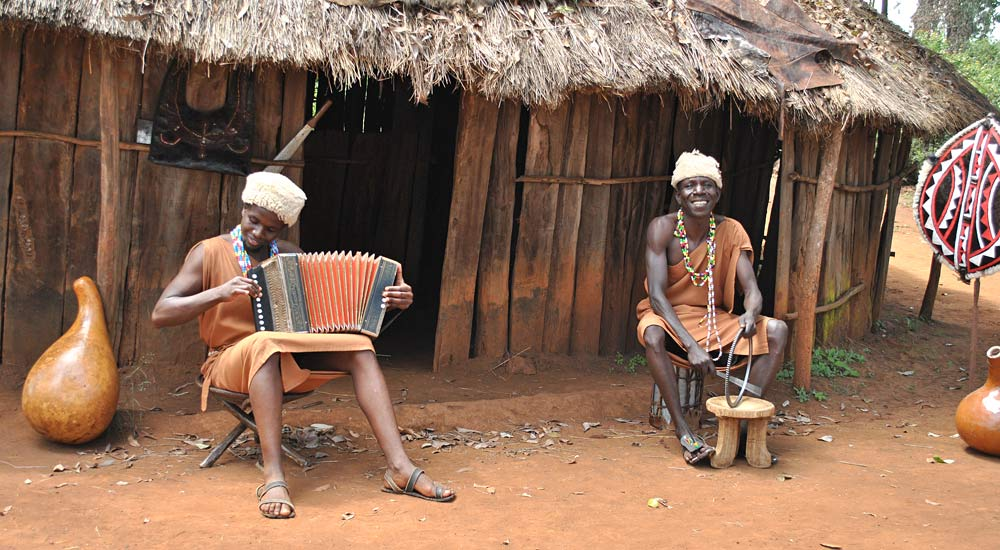
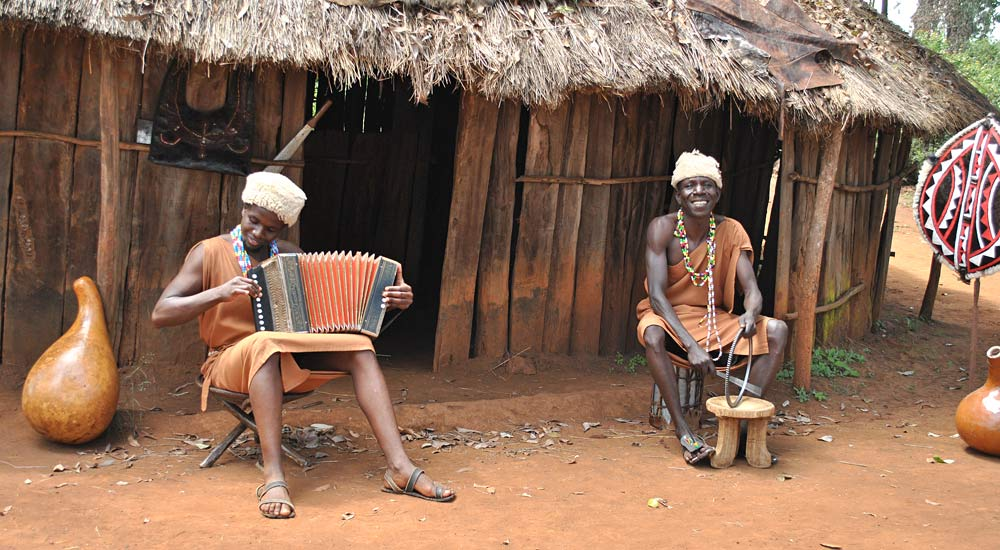

The word Bomas comes from a Swahili word “Boma” meaning a homestead hence the word bomas in plural. It was established by the government in 1971 as a subsidiary company of Kenya Tourist Development Corporation as a tourist attraction. It also wanted to preserve, maintain and promote rich and diverse cultural values of various tribal groups of Kenya. Mario Masso is its leader.
Bomas of Kenya is a tourist village in Langata, Nairobi. Bomas (homesteads) displays traditional villages belonging to the several Kenyan tribes. Bomas of Kenya is home to one of largest auditorium in Africa. It is located approximately 10km from the Central Business District.
Cultural Performances
The Bomas Harambee Dancers are the country’s national dance company par excellence, proudly representing the beauty and diversity of Kenya’s music and dance traditions since 1973.Local and international visitors can experience the delightful sounds and movements of Kenya in our daily cultural performances and/or add a note of culture to their events by hiring the dance troupe for an outside performance.
The troupe’s repertoire consists of over 50 dances from different ethnic communities. With live percussion, string and wind instruments, and diverse, authentic and energetic dancing, BomasHarambee Dancers will take you on an enchanting journey through Kenya.
Daily Shows
Experience the rich diversity of Kenyan traditional music and dance in our daily cultural performances. Our repertoire consists of over 50 dances from different ethnic communities. With live percussion, string and wind instruments, and diverse, authentic and energetic dancing, BomasHarambee Dancers will take you on a journey through Kenya’s past and present.
From Western Kenya and the shores of Lake Victoria (Nyanza) through Rift Valley, Central and Eastern Kenya to North-eastern and Coastal Kenya, our daily shows display an array of diverse musical and dance traditions. Some of the dances you can experience include the impressive Maasai Eunoto dance, the Kikuyu Circumcision dance, the spectacular Chuka drummers, Coastal Sengenya and Gonda dances, Swahili Taarab, NubiDholuka dance and many more. From Thursday to Sunday, the daily shows also feature the fabulous Mambo Jambo acrobats, who showcase the best of acrobatics, including balancing, rope skipping, juggling, fire limbo, etc.
Conferencing
Since 1971, when we first opened our doors to the public, Bomas of Kenya has proudly welcomed over 10 million visitors.Located in the south of Nairobi, Bomas of Kenya has an enviable MICE facility in a quiet and serene setting. From finance professionals, construction experts, All African Games, international live music concerts to wedding parties, our halls have hosted a wide array of events and shows.
Bomas of Kenya can host almost any function you can dream of from 20 to 3000 guests ranging from street parties, end year functions, award ceremonies, theme ideas and more. Be creative and we will make it happen! We offer clients a diverse range of services that add value and management of your event, activities and experiences. We provide a unique insight to the Kenyan cultural experience. Our professional team is experienced in working with a wide variety of multinational clients, premium groups, government representatives, social guests, etc. All our events are custom tailored and planned to meet clients’ specific requirements. Our extensive expertise and flexibility enables us to ensure professionally delivered, quality products and services. Here is to the next generation.
Conferencing Facilities
The Auditorium
The architectural design of the BOK Auditorium is inspired by the shape of traditional huts common among different communities of Kenya. It provides a unique ambiance, accommodating 3000 pax. It’s ideal for large gatherings, AGM’s,trainings, music concerts, festivals, cultural performances etc.
Multipurpose Hall
Our Multipurpose Hall is a superb venue for conferences, conventions, corporate events, exhibitions, gala dinners& weddings. This pillar-less hall accommodates up to 1500 pax and can be transformed to any possible design and setting.
New Conference Hall
The New Conference Hall is a modern, state of the art conference center ideal for conferences, performances, product launches, award ceremonies, film screenings, community events etc. It has a sitting capacity of 950 pax. In its’ vicinity, are have three break-away rooms for smaller impact engagements.
Pavilion
An exciting new hall at Bomas of Kenya! This red carpeted room provides a unique ambiance to your event. Throw an unforgettable wedding party, cocktail or dinner in style,and we shall create lasting memories.